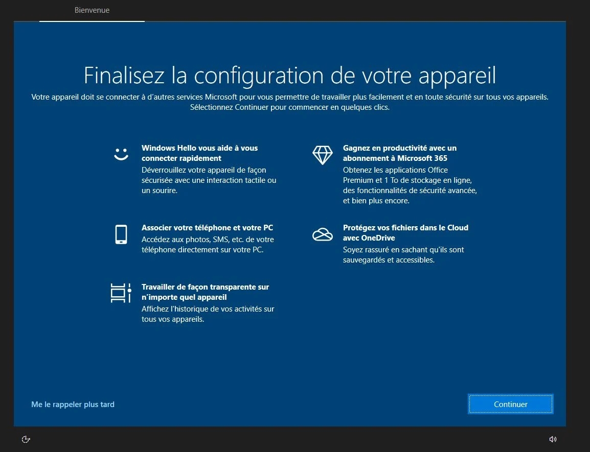
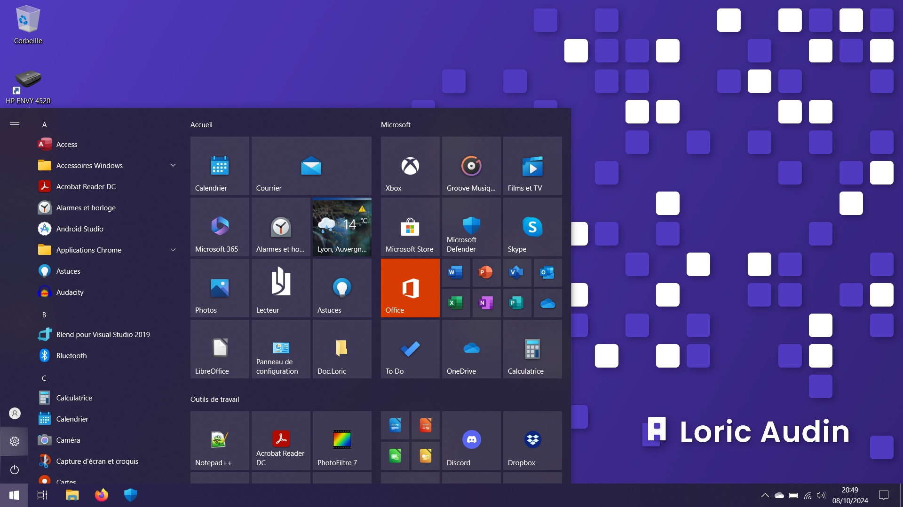
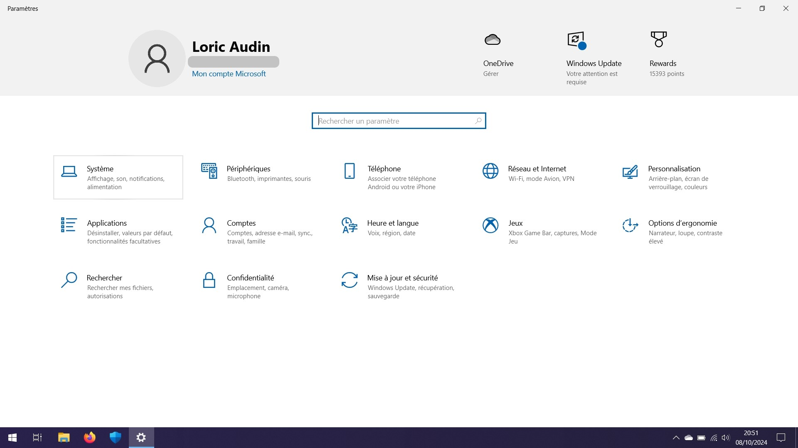
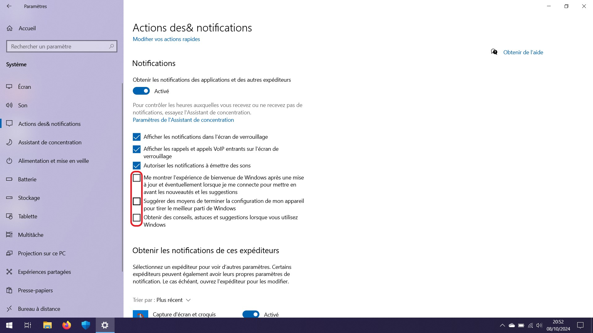
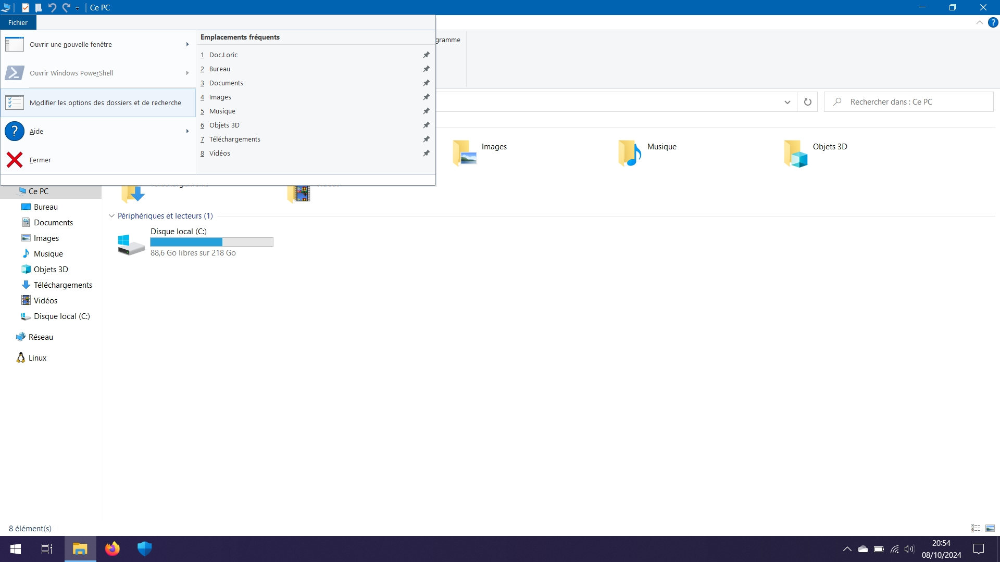
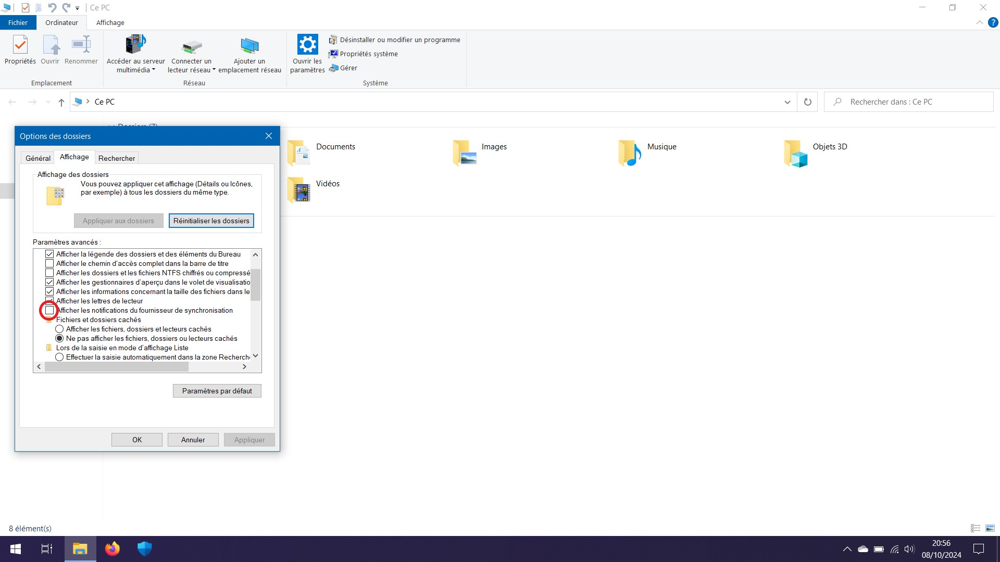

Vous souhaitez supprimer définitivement cette page qui revient sans cesse à l'ouverture de session Windows ? Nous avons la solution pour résoudre ce problème.
Dans le menu Démarrer, entrer dans les paramètres de Windows
Cliquer ensuite sur Système
Dans le paramètre "Notifications et actions" (ou "Actions des notifications"), décocher les cases "Me montrer la page de bienvenue de Windows", "Suggérer des moyens de terminer la configuration" et "Obtenir des conseils".
Et voilà, vous n'aurez plus la page de finalisation de la configuration de Windows
En bonus, nous pouvons également retirer les publicités dans l'Explorateur Windows. Pour cela, cliquer sur l'onglet Fichier, puis Modifier les options des dossiers et de recherches
Dans l'onglet Affichage, décocher la case Afficher les notifications du fournisseur de synchronisation.
